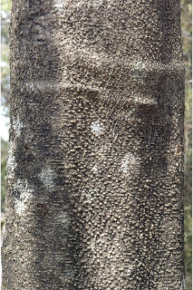
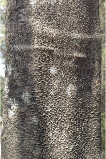
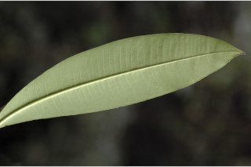
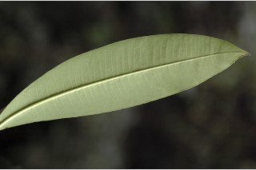

Mem. Wern. Nat. Hist. Soc. 1: 76. 1811; Gamble, Fl. Madras 2: 810-814. 1993 (re. ed); Sasidharan, Biodiversity documentation for Kerala- Flowering Plants, part 6: 280. 2004; Keshava Murthy and Yoganarasimhan, Fl. Coorg (Kodagu) 274. 1990; Cook, Fl. Bombay 1: 132. 1902.
Mem. Wern. Nat. Hist. Soc. 1: 76.1811; Gamble, Fl. Madras 2: 810-814.1997 (re.ed); Sasidharan, Biodiversity documentation for Kerala- Flowering Plants, part 6: 280. 2004; Keshava Murthy and Yoganarasimhan, Fl. Coorg (Kodagu) 274. 1990; Cook, Fl. Bombay 1:132. 1902
Mem. Wern. Nat. Hist. Soc. 1: 76. 1811; Gamble, Fl. Madras 2: 810-814. 1997 (re. ed); Sasidharan, Biodiversity documentation for Kerala- Flowering Plants, part 6: 280. 2004; Keshava Murthy and Yoganarasimhan, Fl. Coorg (Kodagu) 274. 1990; Cook, Fl. Bombay 1: 132. 1902.
Mem. Wern. Nat. Hist. Soc. 1: 76. 1811; Gamble, Fl. Madras 2: 810-814. 1997 (re. ed); Sasidharan, Biodiversity documentation for Kerala- Flowering Plants, part 6: 280. 2004; Keshava Murthy and Yoganarasimhan, Fl. Coorg (Kodagu) 274. 1990; Cook, Fl. Bombay 1: 132. 1902.
 



 
